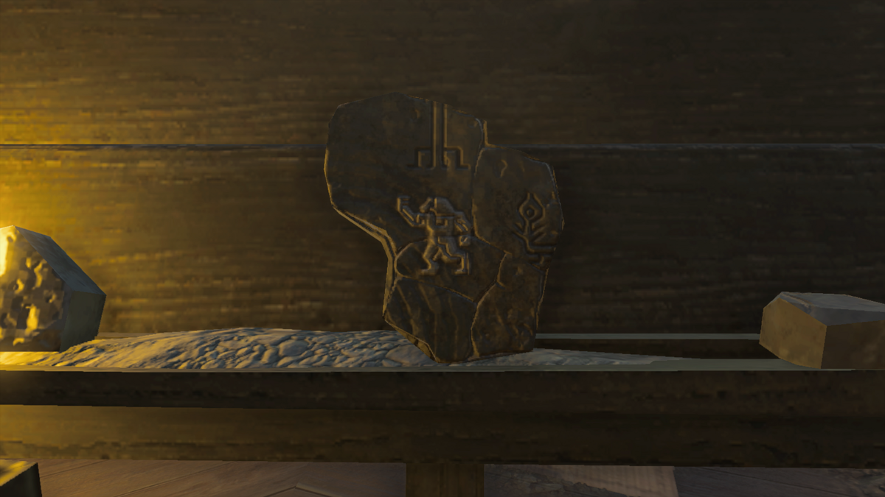
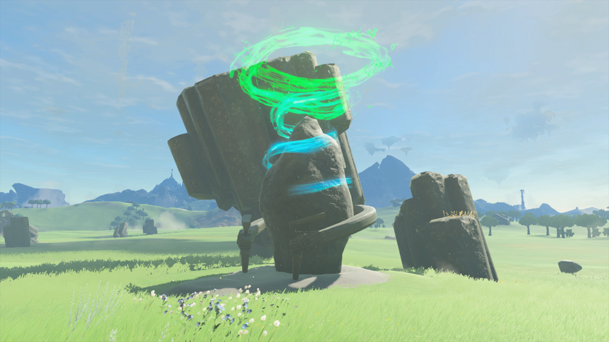
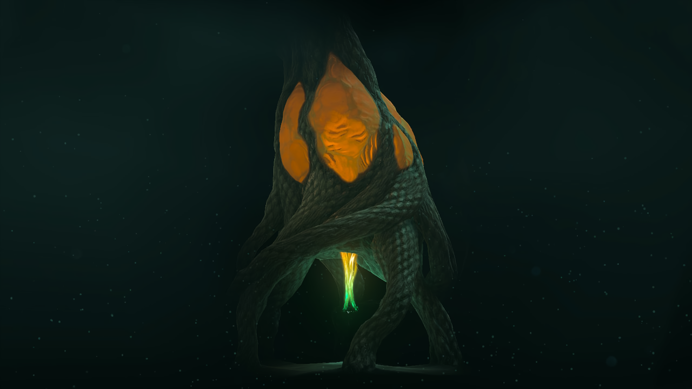
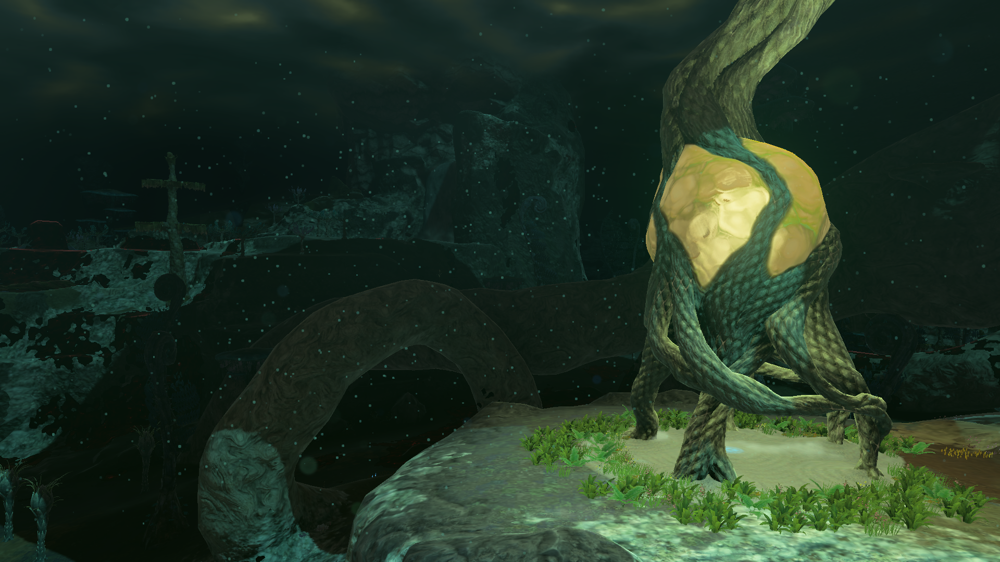

图：地底——一片漆黑，带上发光果再下去，顺着破魔树根找罗比。
先说结论：跳下去，拍一张，回来
开完监视堡垒的鸟望塔、接下四地调查，就能在监视堡垒接这个任务：约舒娅拿着一块地底石板碎片，上面画着一个举起手臂的人影，她想知道地底是不是住过人。罗比已经先下去了，你下去找他、开相机、把同样的雕像拍下来，带回给约舒娅看就行。
| 阶段 | 要做的事 |
|---|---|
| 第一段：接任务 | 在监视堡垒北边大门附近找约舒娅和罗比，拿发光果和箭 |
| 第二段：跳裂缝 | 去监视堡垒南边的海拉鲁平原裂缝，跳下去、开滑翔伞落地 |
| 第三段：找罗比开相机 | 顺着篝火和破魔树根往西走，在伊亚苏斯树根旁找到罗比，解锁相机与海拉鲁图鉴 |
| 第四段：拍雕像交差 | 拍下罗比身后举起手臂的雕像，给罗比看，再回地面找约舒娅 |
接取与奖励
| 项目 | 内容 |
|---|---|
| 接取 | 开监视堡垒鸟望塔、接下四地调查后，在监视堡垒北边大门附近找约舒娅和罗比 |
| 前置 | 鸟望塔已开；最好先带一点发光果 |
| 奖励 | 相机、海拉鲁图鉴、左纳乌矿石×5 |
| 后续 | 地底探索线由此展开；沉睡于地底神殿之谜 |
下地底之前准备什么
地底一片漆黑，没光寸步难行。发光果是命，约舒娅接任务时会给一些，自己手头最好也备一点。箭多带点，约舒娅也会给一些。滑翔伞是跳裂缝落地用的，前面监视堡垒那篇已经拿到了。
第一步：找约舒娅和罗比
1在监视堡垒北边大门附近找约舒娅和罗比。约舒娅拿着一块地底石板碎片，上面画着一个举起手臂的人影，她想知道地底是不是住过人。
2罗比已经先下去了。罗比不让约舒娅自己下去，自己先下地底调查了，让你下去找他、拍一张同样的雕像。
3拿上发光果和箭。约舒娅给你发光果和箭，再下去。
第二步：跳进海拉鲁平原裂缝
1裂缝在监视堡垒南边。裂缝边站着达瓦尔，旁边就是吉欧希尼乌神庙——先点亮当传送点。
2跳下去，快落地前开滑翔伞。别等快贴地了才开。

图：吉欧希尼乌神庙——就在海拉鲁平原裂缝边上，跳下去之前先点亮。
第三步：找罗比、开相机
1落地后见到调查员庞尼克。他是左纳乌调查队的人，帮罗比下来的；他说罗比往更深处走了。
2沿着篝火和破魔树根往西走。激活路上的破魔树根照明，顺着走就能找到罗比。
3伊亚苏斯树根旁的篝火边就是罗比。对话后解锁相机与海拉鲁图鉴。

图：破魔树根——调查就能点亮一大片地底，还能恢复被瘴气侵蚀的心上限。

图：地底——地面上红色的瘴气会暂时扣掉心上限，踩到先绕开，点亮树根就能恢复。
第四步：拍雕像、回去交差
1罗比身后的雕像就是要拍的。举起手臂的雕像，和约舒娅石板碎片上的人影一模一样。
2按住 L 选相机。取景后按 A 拍、按 OK 保存，照片进图鉴相册。
3给罗比看照片。他很满意，先回监视堡垒了。
4回地面找约舒娅交差。拿左纳乌矿石×5。

图：海拉鲁图鉴——拍到的东西都会登记进来，怪物、素材、装备、宝箱都能查。
地底生存要点
| 东西 | 作用 |
|---|---|
| 发光果 | 扔地上照明；也可以贴箭上射到远处 |
| 破魔树根 | 调查点亮一大片地底；恢复被瘴气侵蚀的心上限 |
| 瘴气 | 地面上的红色物质，踩到暂时扣心上限，绕开走 |
| 篝火 | 罗比留下的路标，顺着篝火走就能找到他 |
容易翻车的地方
- 拍错东西——要拍的是举起手臂的雕像，不是随便一个构装体。
- 跳裂缝不开滑翔伞——摔死。
- 不带发光果就下去——地底黑得伸手不见五指。
- 把破魔树根当补血点——它只恢复被瘴气侵蚀的心上限，不回血。
- 拍完照不给罗比看就走——要先给罗比看，再回地面找约舒娅。
一句话总结
带上发光果跳进海拉鲁平原裂缝，顺着树根找到罗比、开相机，拍下举起手臂的雕像，回去找约舒娅交差——相机和图鉴就到手了。